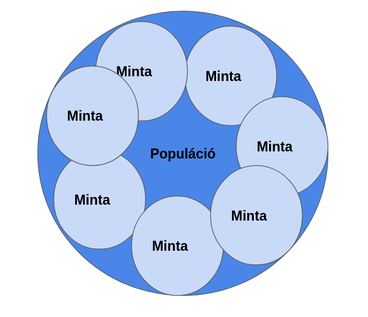
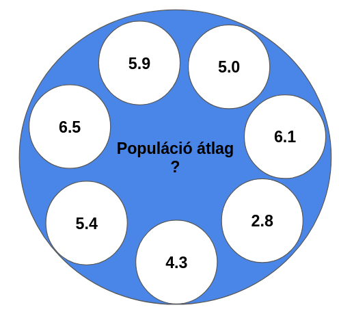
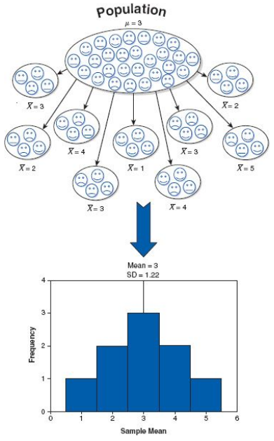
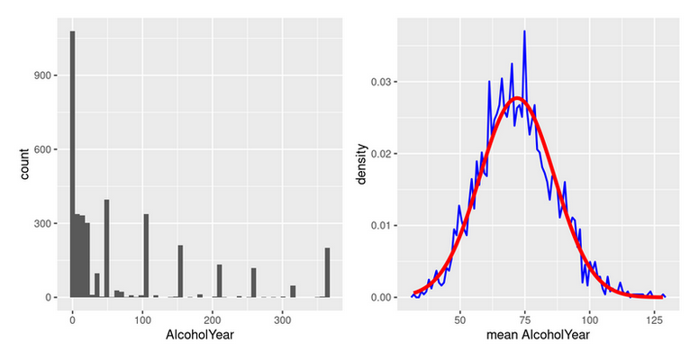
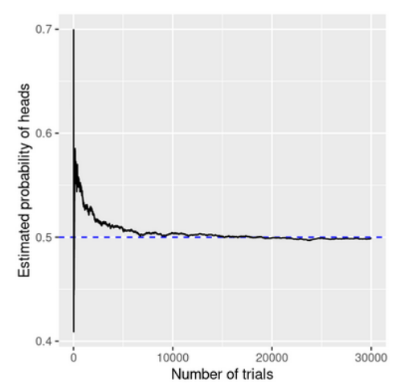
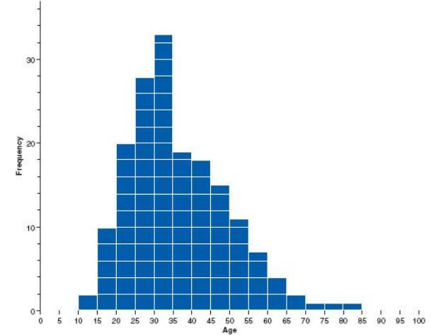
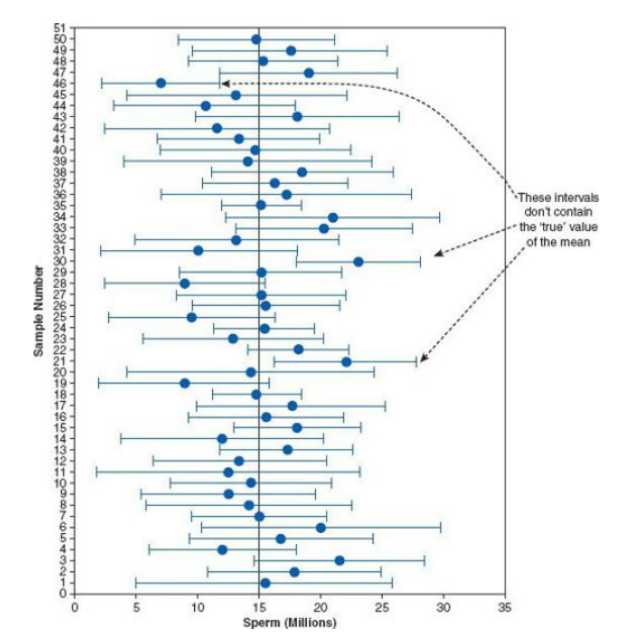
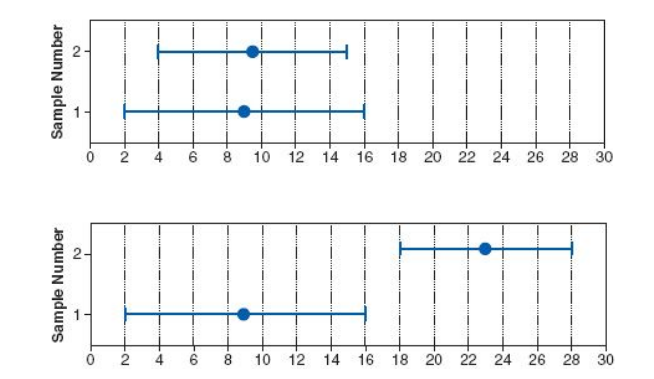

5 Következtetéses statisztika
Sokszor amikor egy kérdést vizsgálunk nem tudjuk az egész populációt megmérni
- Populáció: egy meghatározott csoport összes lehetséges tagja
A statisztikát használjuk arra, hogy egy minta alapján következtetéseket vonjunk le az egész populációra
- Minta: a populációból kiválasztott és megfigyelt egyedek részhalmaza
A minta és a populáció kapcsolata stilizált formában a Figure 5.1 ábrán látható
Mindezek alapján a következtetéses statisztika 3 célját tudjuk meghatározni:
Paraméterbecslés: a populáció valamilyen jellemzőjét (pl. átlag, szórás) szeretnénk megbecsülni a minta alapján
Predikció: a mintán megfigyelt paraméterek alapján próbálunk becsléseket tenni a populáció további elemeire
Modell-összehasonlítás: statisztikai magyarázó modellek összehasonlítása aszerint, hogy a minta adatokat melyik magyarázza legjobban
5.1 Mintavételezés
A minta kiválasztásának módja fontos, mert ezzel tudjuk biztosítani, hogy a minta jól reprezentálja a populációnkat
- valószínűségi: minta jól reprezentálja a populációt, ha a populáció minden tagjának egyenlő esélye van a mintánkba való bekerülésre
- Legreprezentatívabb
- kvóta: a populáció néhány ismert jellemzője alapján válogatunk be meghatározott számú résztvevőt (pl. 50-50% nő és férfi)
- Bizonyos jellemzők mentén reprezentatív
- kényelmi: az vesz részt a kutatásban, akit éppen elérünk
- Nem reprezentatív
- valószínűségi: minta jól reprezentálja a populációt, ha a populáció minden tagjának egyenlő esélye van a mintánkba való bekerülésre
A mintavételezés előnyei és nehézségei
A Figure 5.2 árbrán a minta és populáció paraméterek közti összefüggés látható stilizált formában
- A minta és populáció paraméterek közti kapcsolatot jól demonstrálja az alábbi applikáció: https://istats.shinyapps.io/sampdist_cont/
előnyei
máshogy nem tudunk információhoz jutni az egész populációra vonatkozóan
tudunk becsléseket tenni a populáció jellemzőire (“valódi” átlag, szórás, eloszlás, stb.)
ha ismerjük a hátulütőket, tudjuk kommunikálni a bizonytalanságot is
nehézségei
a minta soha nem tökéletes reprezentációja a populációnak, azaz mindig valamennyire torzított
a kisebb minták könnyebben torzítottak, mint a nagyobbak
nem lehet pontosan tudni, hogy a minta elég jól reprezentálja-e a populációt
lehet, hogy a minta alapján téves következtetésre jutunk a populációra vonatkozóan

5.1.1 Standard hiba
Attól függetlenül, hogy milyen nagy elővigyázatossággal választottuk ki a mintánkat, a minta különbözni fog a populációtól
Ez a mintavételezési hiba (sampling variation)
- Abból következik, hogy a populáció összes egyedéből véletlenszerűen választunk ki egyedeket a mintánkba
Ha többször veszünk mintát egy adott populációból hosszútávon elvárható, hogy a mintáink átlagai leggyakrabban a populáció átlag körül fognak csoportosulni
A minta átlagok eloszlását a mintavételi eloszlásnak (sampling distribution) hívjuk
A mintaátlagok gyakorisági eloszlása
Ha a minta átlagok átlagát vennénk a populáció átlagot kapnánk meg
A minta átlagok populáció átlag körüli szóródását a standard hibával írjuk le
- Máshogyan: Azt a bizonytalanságot fejezi ki, amiben a populációátlagtól eltérhet a mintaátlagtól
Pontosabb nevén az átlag standard hibája (standard error of the mean).
Kiszámolásához a minta szórását elosztjuk az elemszám négyzetgyökével
A standard hiba alapján a mérésünk minősége a populációban található variabilitástól és a mintánk méretétől függ
Mivel csak a minta méretre van ráhatásunk ennek növelésével javíthatjuk a mérőeszközünk pontosságát
Minél nagyobb a mintaméret, annál biztosabbak lehetünk abban, hogy a populációátlagot jól közelítjük
Azonban nem csak a minta mérete számít, hanem a mintavételezés módja is
Akármilyen nagy a mintánk, ha annak tagjai nem jól írják le a populációt mert a minta szisztematikusan torzít
Ezért szoktak kutatók általában random mintavételezésre törekedni
A fent már emltített applikáció jól mutatja, hogyan szóródnak a minta átlagok a populáció paraméter körül: https://istats.shinyapps.io/sampdist_cont/
Általában ezt szokták az ábrákon megjeleníteni hibasávként (error bar)
Ha a hibasávok nem fednek át, akkor arra következtethetünk, hogy a populációban lévő különbség valódi
A Figure 5.3 ábrán a mintavételi eloszlás és a standard hiba látható Field, Miles, and Field (2017)

5.1.2 Szabadságfok
A minta paramétereket ismerjük (például az átlagot) a populáció paramétereit nem
A minta paramétereket használjuk fel arra, hogy megbecsüljük a populáció paramétereket
A szabadságfok (degrees of freedom) azon megfigyelések számát jelöli mintánkban, amit a populáció paraméter becsléséhez felhasználunk
- Tehát megmutatja, hogy mi az a minimum elemszám, ami a becsléshez kell
5.1.3 Centrális határeloszlás elve
Central limit theorem (CHE)
A mintaméret növekedésével a mintaátlagok eloszlása közelít a normális eloszláshoz
Ez akkor is igaz, ha az egyes mintákban lévő eloszlások értéke nem normális!
- Lásd: Figure 5.4 (Poldrack (2018))
Demonstráció: https://istats.shinyapps.io/sampdist_cont/
A CHE miatt használhatjuk a legtöbb statisztikai módszert ami normális eloszlást feltételez


5.2 Valószínűségi eloszlások
Ahhoz, hogy meghatározzuk milyen valószínűséggel kapunk egy értéket vagy annál nagyobb értéket megnézhetjük egy változó gyakorisági eloszlását
A (fig_prob_dist?) ábrán például annak a gyakorisági eloszlása látható, hogy hányan ugrottak a tengerbe a tavalyi évben, miután a valószínűségi eloszlásokról kezdtünk magyarázni nekik (Field, Miles, and Field (2017))
Ha például arra lennénk kíváncsiak, hogy mekkora eséllyel ugranak a tengerbe 70 éves vagy annál idősebb emberek kiszámolhatnánk ennek a valószínűségét a mintánkban lévő eloszlás alapján
Első ránézésre az adatok alapján azt várnánk el, hogy a jövőben az idősebb emberek ritkábban ugranak a tengerbe, mint mondjuk a 30 évesek
A konkrét valószínűség kiszámítása viszont minden egyes empirikus eloszláshoz fáradtságos folyamat lenne, szerencsére a statisztikusok kiszámították a valószínűséget (a görbe alatti területet) több nevezetes eloszlás különböző értékeihez
Ilyen a normál eloszlás is, amelynek átlaga 0 és szórása 1 (lásd: ?fig-z_curve)
Azonban a mintánkban található eloszlásnak nem 0 az átlaga és a szórása sem 1
Szerencsére, a standardizálás segítségével a változónk értékeit transzformálhatjuk úgy, a változónk eloszlása a nevezetes normál eloszlásra hasonlítson
Ezt z transzformációnak is nevezik, hiszen a transzformáció után standardizált z értékeket kapunk
A standardizált változó átlaga 0 és mértékegysége a szórás lesz
A z érték megmondja, hogy az átlagtól hány szórásnyira van egy adott érték
Így az értékek nagyságrendtől és a változások abszolút nagyságrendjétől függetlenül összehasonlíthatók
- Különböző skálán mért változók ábrázolásánál vagy többszörös lineáris regressziónál hasznos eszköz a standardizálás
Egy adatpont z értékké való transzformációjához először kivonjuk az értékből az átlagot, majd elosztjuk a szórással
Így már válaszolni tudunk az előző kérdésre, hogy mekkora eséllyel ugranak a tengerbe 70 éves vagy annál idősebb emberek?
70-es nyers értéket z értékké alakítjuk
Tegyük fel, hogy a változó átlaga 36 és szórása 13
z = (70-36)/13 = 2.62
Ez lesz a kritikus értékünk!
Ezután megnézhetjük, hogy a küszöbértéken túl (hiszen a 70 éves vagy annál idősebb emberek érdekelnek) mekkora a görbe alatti terület a normál eloszlásnál
Ez 0.0044 azaz 0.44%
Annak az esélye, hogy valaki, aki 70 éves vagy annál idősebb a tengerbe ugrik, ha a valószínűségi eloszlásokról kezdünk magyarázni neki 0.44%
- Ez egy viszonylag kis esély, tehát nyugodtan mondjuk fel a Kvantitatív alapok tárgy ezen fejezetét nagyszüleinknek gyakorlás gyanánt!

5.3 Pontbecslés és intervallum becslés
Amikor a mintánk átlaga alapján a populáció átlagot kívánjuk megbecsülni, akkor pontbecslést végzünk
A pontos becslésre viszonylag kicsi az esély
Az elemszám növekedésével a minta átlag azonban közelebb lesz a populáció átlaghoz
A becslésben lévő bizonytalanságot a standard hibával tudjuk számszerüsíteni
- Nagyobb minta elemszám mellett a standard hiba mértéke csökken
Tudunk intervallum becslést is végezni
- Ekkor azt becsüljük meg, hogy milyen értéktartományon belül helyezkedhet el a populáció átlag
5.4 Konfidencia intervallum
Ahogy már korábban említettük a minta átlagát használjuk arra, hogy megbecsüljük a populáció átlagot
- Ezzel az adatokból levont következtetést általánosítsuk (generalization) a mintánkon túlra
Láttuk, hogy különböző mintavételelezések különböző minta átlagokat adnak és a standard hibát használhatjuk arra, hogy meghatározzuk mekkora a mintaátlagok varianciája a populáció átlag körül
Azt, hogy a minta átlag mennyire jól becsüli meg a populáció értéket úgy is eldönthetjük, hogy kiválasztunk egy értéktartományt, amelybe a populáció átlag feltehetően beleesik
- Ezt az értéktartományt nevezzük konfidencia intervallumnak
Minél szélesebb a konfidencia intervallumunk annál bizonytalanabbak vagyunk abban, hogy a minta átlag jó reprezentációja-e a populáció átlagnak
5.4.1 Helyes értelmezése
A konfidencia intervallumot gyakran félreértik a kutatók
- Talán még a p értéknél is gyakrabban!
Egy 95%-os konfidencia intervallum nem azt jelenti, hogy 95% az esélye annak, hogy a populáció átlaga beleesik-e az intervallumba!
A populáció átlag egy fix érték, így egyes esetekben vagy beleesik vagy nem
Nem tudunk valószínűséget rendelni mellé
A helyes értelmezésnél ugyanazt a logikát kell követnünk, mint a hipotézis tesztelésnél: hosszútávon milyen valószínűséggel fogunk helyes döntést hozni
hosszútávon a konfidencia intervallum az esetek 95%-ában fogja tartalmazni a populáció átlagot
ha végtelenszer megismételjük a mintavételt és kiszámoljuk a minta átlagot és a hozzá tartozó konfidencia intervallumot, akkor az esetek 95%-ában a kapott konfidencia intervallumok magukba fogják foglalni a populáció átlagot
Azt azonban nem tudhatjuk, hogy az éppen általunk gyűjtött mintához kiszámolt konfidencia intervallum tartalmazza-e a populáció átlagot vagy sem
Másszóval: 95%-os konfidencia intervallum mellett az esetek 5%-ban tévedünk, ha feltételezzük, hogy az adott konfidencia intervallum valóban magába foglalja a populáció átlagot
A Figure 5.7 ábrán látható, hogy nem minden konfidencia intervallum tartalmazza a populáció átlagot
- Természetesen a valóságban általában nem tudjuk a populáció átlagot, ezért a minta átlag alapján hozunk döntést

5.4.2 Kiszámítása
A konfidencia intervallumot a z értékek segítségével számoljuk ki
Egy normál eloszlásnál ahol az átlag 0 és a szórás 1 a z értékek 95%-a a -1.96 és a +1.96-os z értékek közé fog esni
- A becslés mögött az a feltételezés áll, hogy a mintavételezési eloszlás hasonlít egy normál eloszlásra
Alsó határa a konfidencia intervallumnak: minta átlag - (1.96 * standard hiba)
Felső határa a konfidencia intervallumnak: minta átlag + (1.96 * standard hiba)
A mintánk átlaga mindig a konfidencia intervallum közepe
A konfidencia intervallum mérete függ a standard hiba méretétől
Ha kicsi a minta a t eloszlást használva kell kiszámítani a konfidencia intervallumot
- Nagy minta esetén a t-eloszlás megegyezik a normál eloszlással
5.4.3 Vizuális ábrázolása
Konfidencia intervallumok vizuális ábrázolása
Általában a konfidencia intervallumot használjuk ábrákon az átlag körüli hiba mértékének vizualizására
Ha két átlaghoz tartozó konfidencia intervallumok átfednek, akkor feltételezhetjük, hogy a két minta átlaga ugyanabból a populációból származik
- Lásd t-próba
- Lásd: Figure 5.8 felső ábráját Field, Miles, and Field (2017)
- Miért fontos, hogy meg tudjuk mondani, hogy két minta nem ugyanabból a populációból származik?
- Kísérleti kutatási elrendezésnél például az embereket véletlenszerűen két csoportba sorolhatjuk, ahol az egyik csoport valamilyen kísérleti beavatkozáson megy keresztül (péládul egy gyógyszert adunk nekik), amíg a másik csoport nem megy keresztül a beavatkozáson. Ez a kontroll csoport.
- Mivel az emberek véletlenszerűen vannak besorolva a két csoportba, így feltételezzük, hogy ugyanabból a populációból származnak
- Ha azt találjuk, hogy a két csoport minta átlaga között meglepően nagy különbség van, akkor feltételezzük, hogy a kísérleti beavatkozásunk sikeres volt
Ha nem fednek át
1) vagy különböző populációból származnak
2) vagy ugyanabból a populációból származnak de az egyik konfidencia intervallum nem tartalmazza a populáció átlagot
- Ez az esetek 5%-ában fordul csak elő 95%-os konfidencia intervallum mellett, ezért valószínűleg a 1) opció mellett döntünk
Lásd: Figure 5.8 alsó ábráját Field, Miles, and Field (2017)
